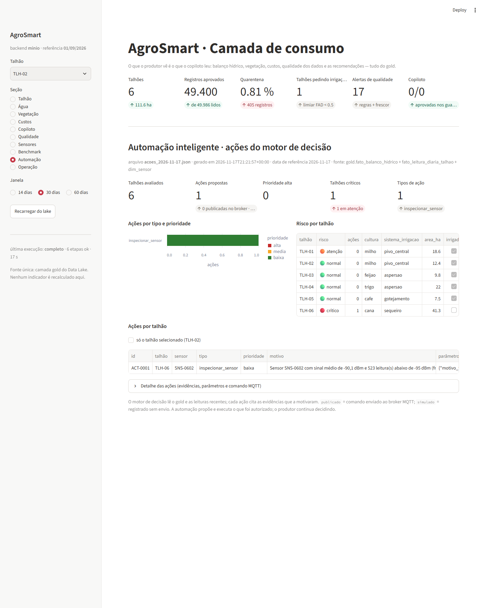
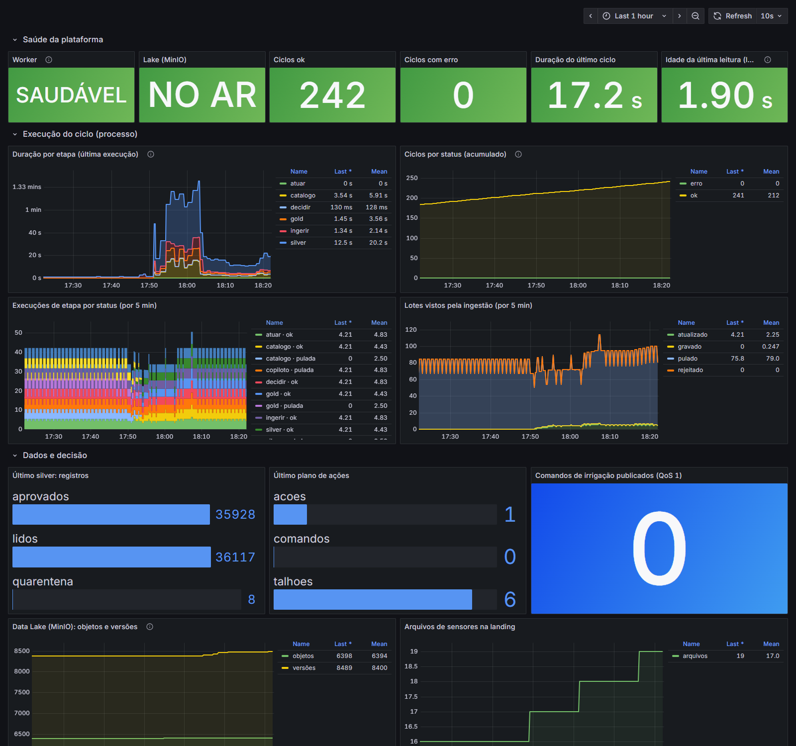
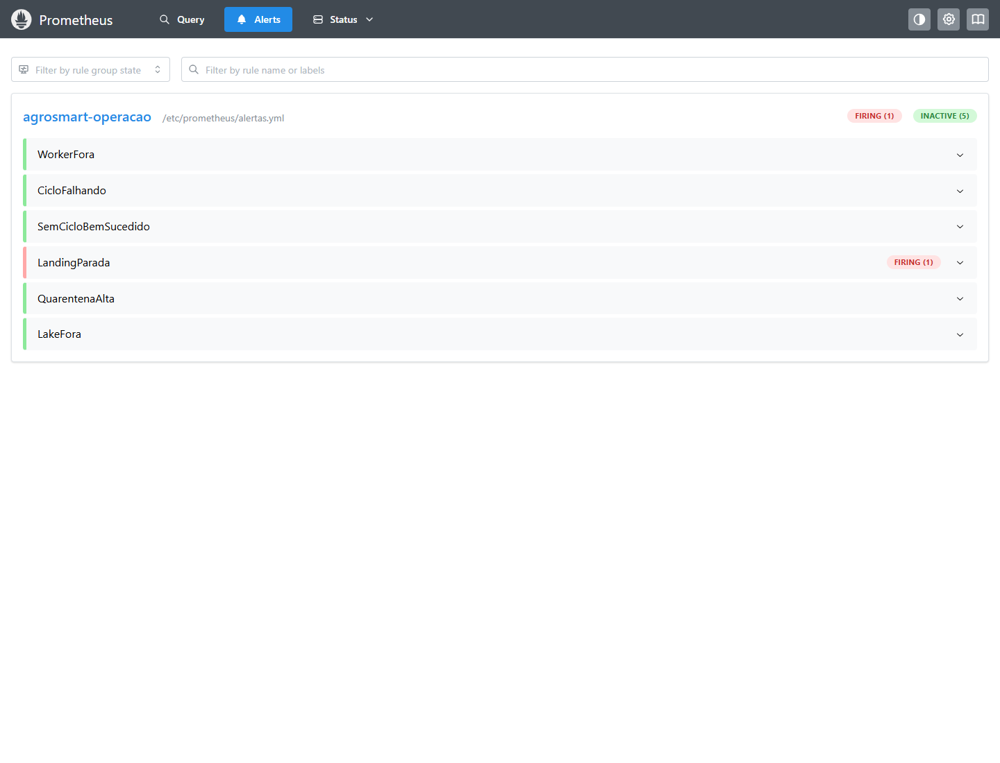

Como funciona · telas reais da plataforma rodando
Ação com motivo.
Sistema monitorado.

Dashboard · automação e risco por talhão

Grafana · saúde e ciclos

Prometheus · alertas operacionais
outputs/prints/fase7-04-*
4 / 9